Хрещення Русі
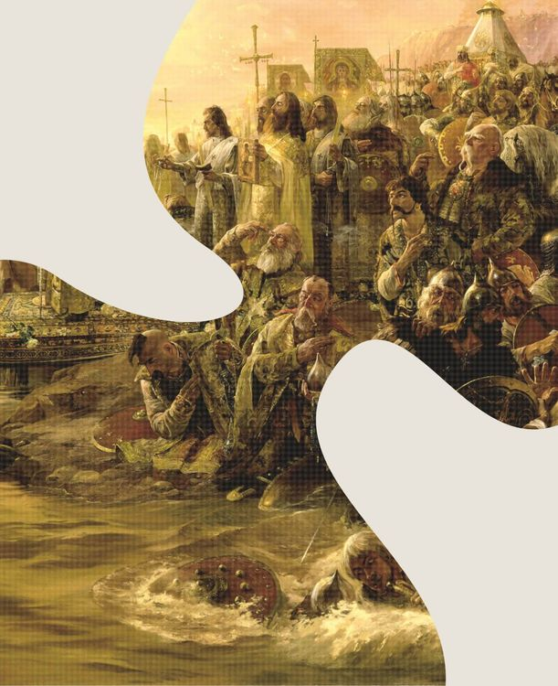
Переломний момент, що сприяв розбудові української державності, поширенню писемності та культури, а також визначив подальший європейський розвиток держави.
988
Шрифт:
Kharkiv Tone
Дизайнер(ка):
До хрещення Русі ми вже були найбільшою країною в Європі. Наша територія сягала 800 тис. м². Київ був розбудований як столиця. Місцеві князі усунені. Перші гроші (вони ж — найдавніші артефакти з тризубом) впроваджені. Але князь Володимир Великий розумів, що укріплення Київської Русі та підвищення її престижу на світовій арені неможливе без реформи віросповідання.
Тому в 988 році він обрав для України не просто нову та офіційну релігію, а й політичний вектор. Прийняття християнства відкрило Володимиру Великому і його династії доступ до очільників Візантії та європейських держав. А також докорінно змінило світобачення нації.
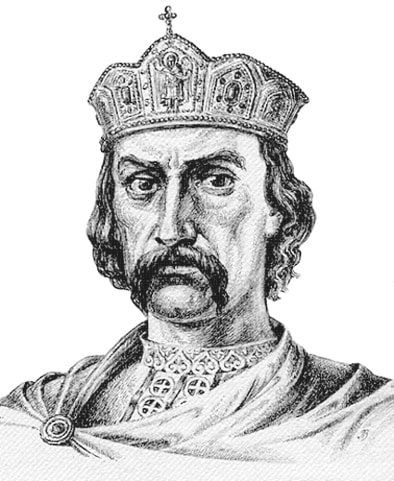
Хрещення Русі відбувалось поступово. Спершу віру прийняв князь, аби показати, що християнство — шлях до прогресу. Потім його сини, двір і бояри. Вже після того — все населення.
Розпочалось піднесення освіти, мистецтва, літератури, науки й архітектури. А разом з цим і розвиток та об’єднання Київської Русі. Стала поширюватися кирилиця та з’явились перші школи для дітей. Новозбудовані церкви та монастирі ставали осередками культури, де велося літописання, засновувались бібліотеки, створювались ікони, мозаїки та фрески.
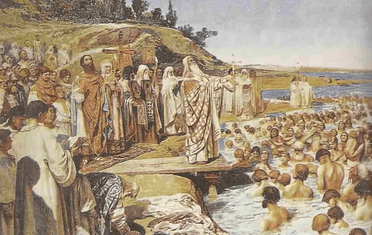
До Русі почали прибувати грецькі священики задля поширення грамотності, знань про світ і цивілізації. З новою релігією також прийшло й пом’якшення звичаїв: варварське «око за око» замінили на грошові штрафи, а з покарань зникла смертна кара.
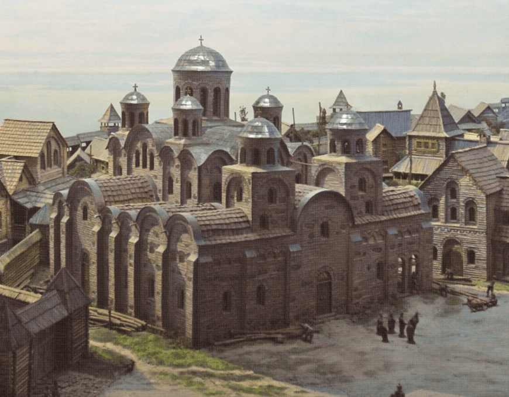
Для нашої нації та всього демократичного світу хрещення Русі символізує тяглість тисячолітньої історії України.
Ось чому росіяни намагаються привласнити собі нашу історію шляхом насильництва й обману. Щоб протидіяти їхнім фейкам про єдність походження наших народів, українська влада затвердила День української державності — 15 липня. У цей день ми вшановуємо пам’ять Володимира Великого та нашу єдність через тисячоліття.
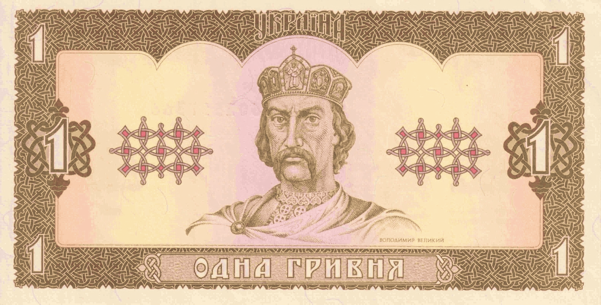
Шрифт:
Kharkiv Tone
Наступна літера та подія
Хрещення Русі
Проєкт у
соцмережах
Щедрик
АН-225 «Мрія»
Данило Галицький
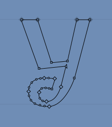
Українські січові стрільці
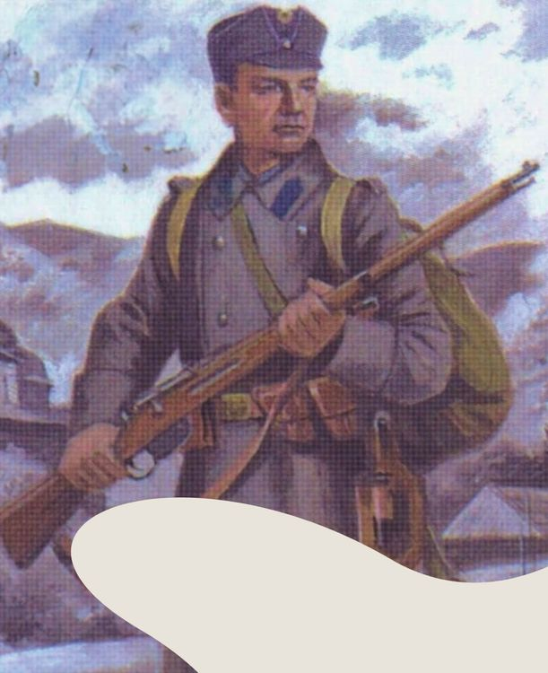
«Як умру, то поховайте...»
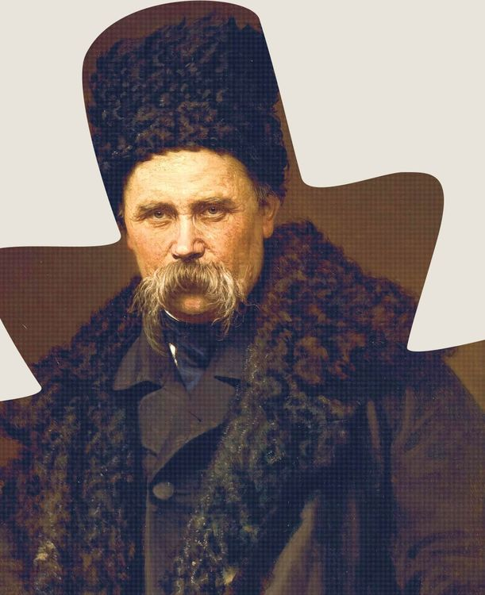
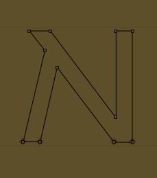
Фальц-Фейн та «Асканія»
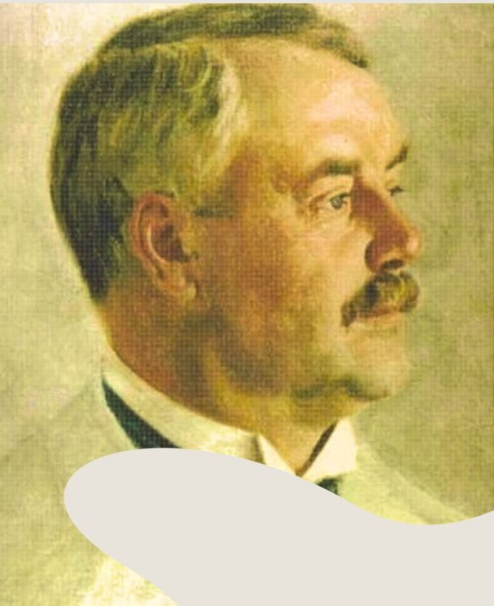
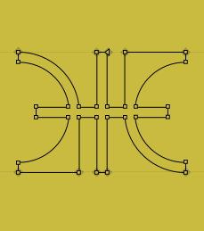
Живий ланцюг
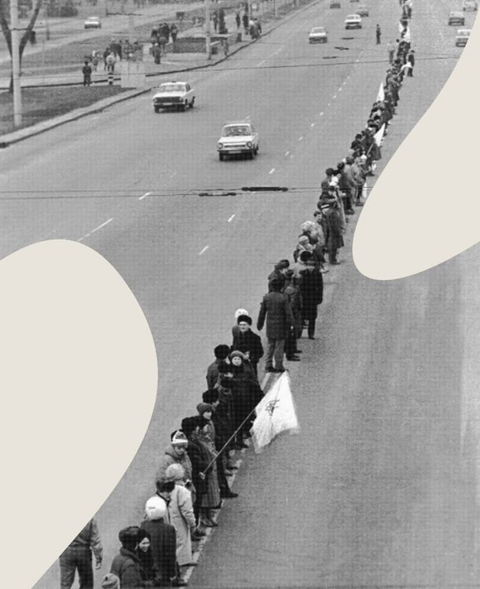
Воля
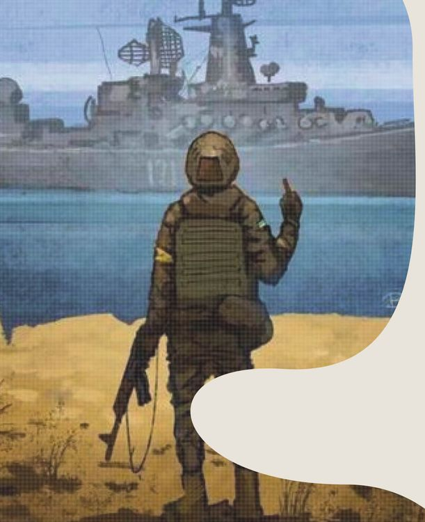
Маріуполь
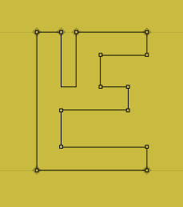
«Енеїда» Котляревського
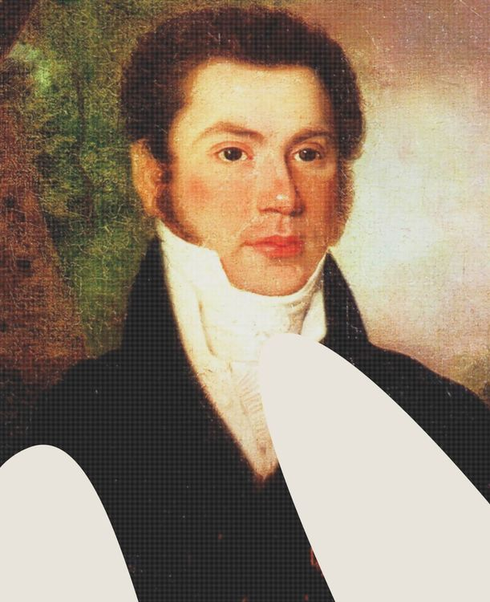
Запорізька Січ
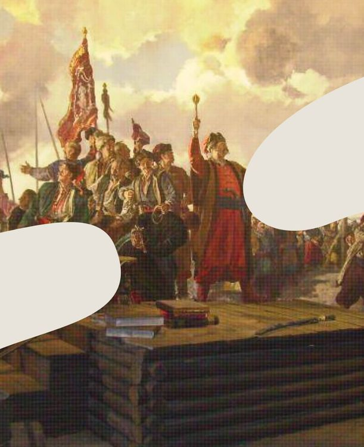
Данило Галицький
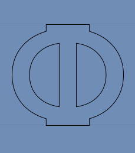
«Наша армія, наші хранителі»
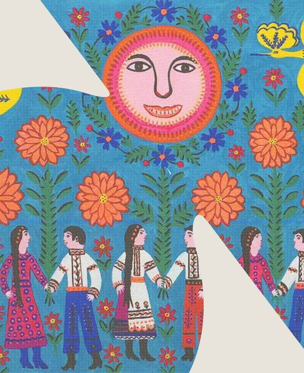
Кримські татари, караїми та кримчаки
Маріуполь
Українські січові стрільці
АН-225 «Мрія»
Воля
Запорізька Січ
Маріуполь
Голодомор
Хрещення Русі
Ирій, индик та ирод
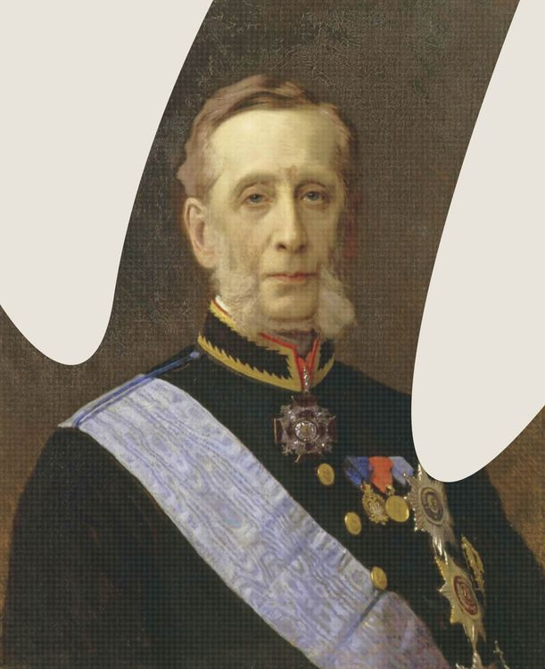
Кримські татари, караїми та кримчаки
Пересопницьке Євангеліє
Пересопницьке Євангеліє
Воля
Будинок «Слово»
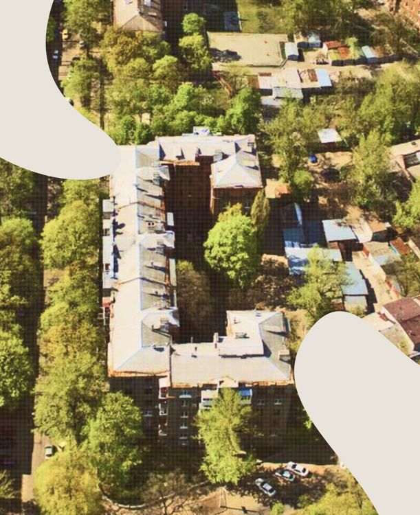
Референдум 1991 року
Хрещення Русі